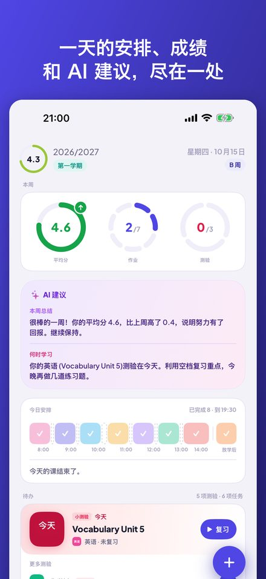
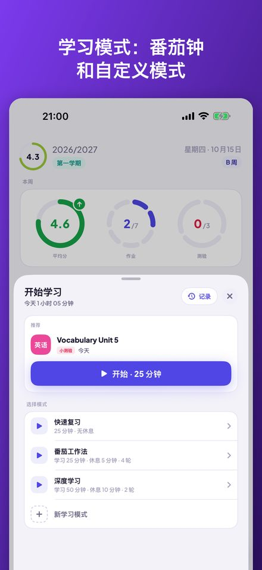
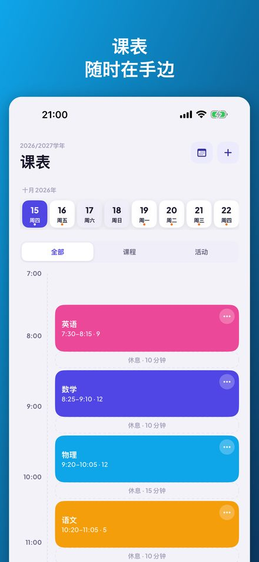
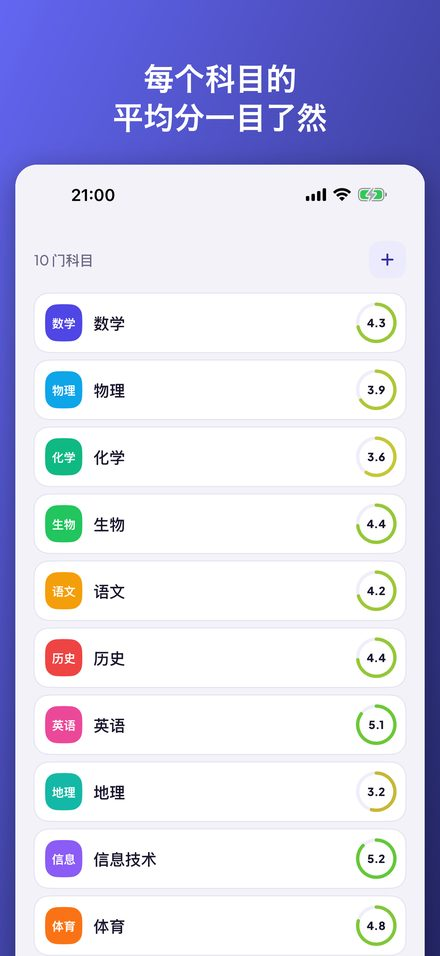

Kajet 是一款适合中小学和大学的学生规划应用。一天的安排一目了然，成绩带平均分，作业和测验带提醒，还有支持番茄钟的学习计时器。无需账号，没有广告。




显示本周平均分、作业和测验的圆环，今日课程时间轴，以及可一键打勾的待办列表。
日视图和周视图，支持 A/B 周、停课、代课、教室变更，以及带出发提醒的课外活动。
简单平均或加权平均，可自定义类别，支持补考和评语。统计会显示趋势、最强科目和拉低平均分的科目。
ECTS 学分、期末成绩、ECTS 加权平均分，以及自行设定的奖学金门槛和还需要拿到的成绩。
按今天、明天和本周分组，可提前一天或三天提醒。已完成的测验一步就能转为成绩。
可自定义模式的计时器：倒计时，或带轮次和休息的番茄钟。把学习记录关联到某次测验，并查看学习历史。
在主屏幕和锁定屏幕上显示下一节课。可以问 Siri 下一节课、今天的作业或平均分，也可以用语音添加成绩。
无需账号，没有广告，数据只保存在你的 iPhone 上。可选的 AI 建议借助 Apple Intelligence 完全在设备上运行。
Kajet 以波兰的学校和大学体系为蓝本设计（1–6 分制、2.0–5.0 的大学评分制、ECTS），但在任何地方都能使用。支持英语、波兰语、德语、法语、西班牙语、意大利语、日语和中文。适用于 iOS 17 或更高版本的 iPhone；AI 建议需要 iOS 26 和 Apple Intelligence。